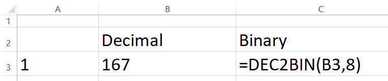
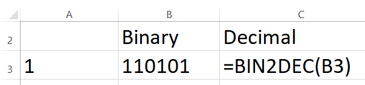
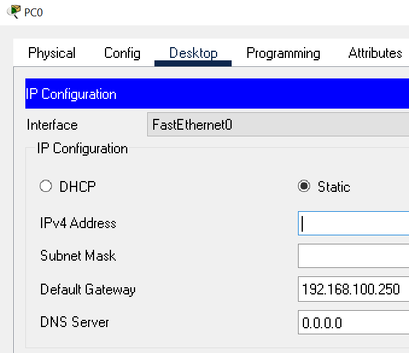

IPv4 and IPv6 based networks ensure reliable and efficient data transmission across a wide assortment of global networks. Sometimes it takes a while before a new idea reaches a 'critical mass'. Investigate the history of the development of packet switched networks. Note: do not only rely on the book for the answer. Check out Wikipedia! Packet Switching
(50) 1. List at least one reason that the Bell System (based on a circuit switched dedicated network model) showed little interest in the 'packet switching' work of Paul Baran and Donald Davies.
Note-for Projects 6-1,2,3 and 4 there is one Excel file
(50) 2. Do Hands-On Project 6-1 You are advised to try these problems by hand after reading the book, section 6-1a, Binary Math. Down the Excel file- Summative06_Projects.xlsx, and save as "Summative06_Projects" in your ' ' folder. Note: the worksheets are protected, but NOT password protected, to prevent inadvertent changes to formulas and data. When the Hands-On Projects are complete, you will upload this file to the D2L Summative06XL folder. There are several ways to handle this conversion, an example using the DEC2BIN() function is shown below.

(50) 3. Do Hands-On Project 6-2 You are advised to try these problems by hand after reading the book, section 6-1a, Binary Math. Use the Excel file- Summative06_Projects.xlsx, to complete this project. Save this file as "Summative06_Projects" in your ' ' folder. When complete, you will upload this file to the D2L Summative06XL folder. There are several ways to handle this conversion, an example using the BIN2DEC2() function is shown below.

For Projects 6-3 and 6-4 you can also refer to this Subnet Mask Calculator.
(50). 4. Do Hands-On Project 6-3 You are advised to try these problems by hand after reading the book, section 6-3a, Calculating a Subnet Mask. Use the Excel file- Summative06_Projects.xlsx, to complete this project. Save this file as "Summative06_Projects" in your ' ' folder. When complete, you will upload this file to the D2L Summative06XL folder. There are several ways to handle this conversion, the Excel file demonstrates one method. Please pay special attention to the forumulas and notes provided in the spreadsheet.
(50). 5. Do Hands-On Project 6-4 You are advised to try these problems by hand after reading the book, section 6-3a, Calculating a Subnet Mask. Use the Excel file- Summative06_Projects.xlsx, to complete this project. Save this file as "Summative06_Projects" in your ' ' folder. When complete, you will upload this file to the D2L Summative06XL folder. There are several ways to handle this conversion, the Excel file demonstrates one method. Once you determine the number of host bits required to handle the Required hosts, the prefix is readily calculable. Please pay special attention to the forumulas and notes provided in the spreadsheet.
Do Hands-On Project 6-5 to learn to use the nslookup command to find out information about the network. You can work with a partner. Make sure to use your WSU laptop because you have administrator access.
nslookup
Open an elevated Command Prompt (admin). Type in nslookup -type=ns www.winona.edu nslookup displays information on network DNS.
nslookup -type=ns www.winona.edu
(50) 6. Use the Snipping Tool to make a screen shot of the command window. Save the screen shot as "Ex1" in your ' ' folder. You will be combining screen shots from several exercises at the end of this assignment, just as you did in Formative00-PDF File Creation.
The Packet Tracer Labs are accessible from MindTap in two ways:
The files needed for Packet Tracer labs are available on the Cengage Website, in Professor Paulson's OneDrive ReadOnly folder for this course, or in the WSU network drive ReadOnly folder for this course. You must save a copy of these files to your folder.
Follow the instructions in Packet Tracer Lab 6-1 to try to set an invalid IP Address. When done, perform the tasks below. For background information please refer to the book.

(50) 7. Use the Snipping Tool to make a screen shot of the Desktop Properties IP configuration window showing the error message from step 6. Save the screen shot as "Ex2" in your ' ' folder. You will be combining screen shots from several exercises at the end of this assignment, just as you did in Formative00-PDF File Creation.
Follow the instructions in Packet Tracer Lab 6-2 to set a IPv6 static address. When done, answer the questions below. For background information please refer to the book.
In step 5, to open the PC0 Command Prompt window click PC0, click the Desktop tab, click Command Prompt as shown below.
(50) 8. After step 5 use the Snipping Tool to make a screen shot of the PC0 command prompt window showing the successful ping request. Save the screen shot as "Ex3" in your ' ' folder. You will be combining screen shots from several exercises at the end of this assignment, just as you did in Formative00-PDF File Creation.
Use a web browser to verify that you have published your website to https://classes.winona.edu/... Check that your name, StarID, email, class, semester, section and all of your answers are correct and visible. From the menu choose File>Print... and using "Microsoft Print to PDF" save a copy of this assignment as a .pdf file in your ' ' folder.
(50) 9. Save your file 'WebPage.pdf' to the ' ' folder.
Create one .pdf (portable document format) file from the screen shots that you have taken by following these steps.
(50) 10. Save your file 'ScreenShots.pdf' in your ' ' folder.
Use PDFill to merge the WebPage.pdf file with the ScreenShots.pdf file, and save it as 'Summative06.pdf' in your ' ' folder.
(50) 11. Upload your file 'Summative06.pdf' to the D2L 'Summative06' Assignment folder.
Use a browser to view your completed and published website at: https://classes.winona.edu/... Ensure that you have linked this assignment on your home page. Note that your screen shots do not have to be completed to perform this step.